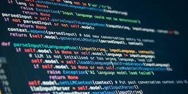
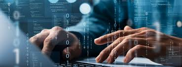
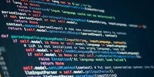
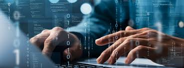

La programación
Introducción
Las computadoras son una parte esencial de nuestra vida cotidiana. Casi todos los aparatos que usamos tienen algún tipo de computadora capaz de ejecutar ciertas tareas: lavarropas con distintos modos de lavado, consolas de juegos para momentos de entretenimiento, calculadoras súper potentes, computadoras personales que se usan para un montón de propósitos, teléfonos celulares con un sinfín de aplicaciones y miles de cosas más.
Todos estos dispositivos con computadoras de distinto tipo tienen algo en común: alguien “les dice” cómo funcionar, es decir, les indica cuáles son los pasos que deben seguir para cumplir una tarea. De eso se trata la programación: es la actividad mediante la cual las personas le entregan a una computadora un conjunto de instrucciones para que, al ejecutarlas, ésta pueda resolver un problema. Quienes realizan esta actividad reciben el nombre de programadores. Sin las personas que las programen, las computadoras dejan de ser útiles, por más complejos que sean estos aparatos. Los conjuntos de instrucciones que reciben las computadoras reciben el nombre de programas.
Galería
Este es un espacio para una galería o imágenes:
 



¿Que es la programación?
La programación informática es el arte del proceso por el cual se limpia, codifica, traza y protege el código fuente de programas computacionales, en otras palabras, es indicarle a la computadora lo que tiene que hacer.
La programación informática es una de las habilidades esenciales que aprendes cuando estudias informática.
Detrás de todos los programas informáticos que conocemos y usamos de manera cotidiana para facilitarnos diversas actividades de nuestro día con día, existe todo un proceso para poderlos crear. Este proceso es conocido como programación, conozcamos un poco más sobre lo que conlleva este proceso.
Por medio de la programación se establecen los pasos a seguir para la creación del código fuente de los diversos programas informáticos.
Este código le indicara al programa informático que tiene que hacer y como realizarlo.